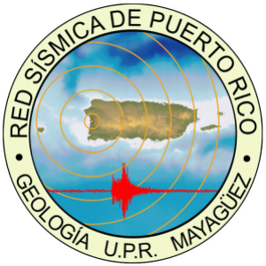
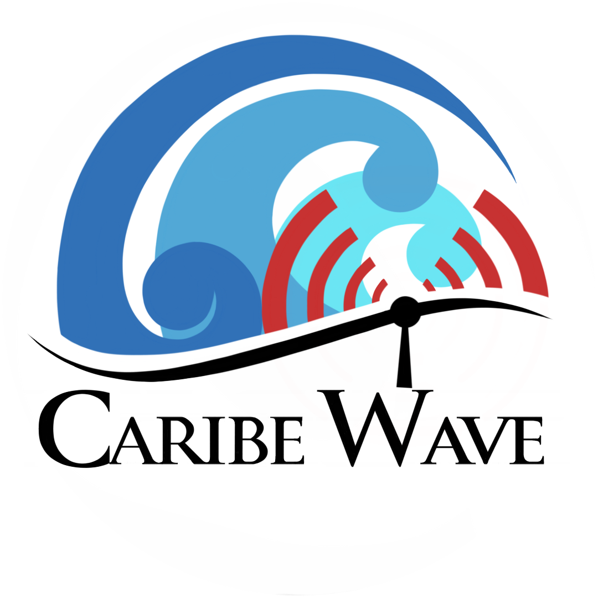
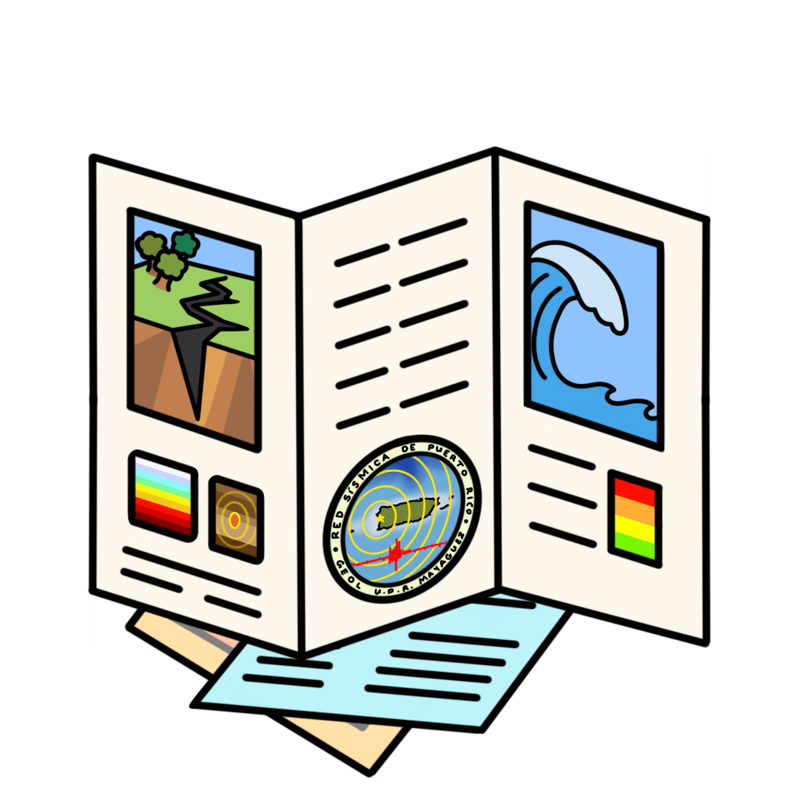
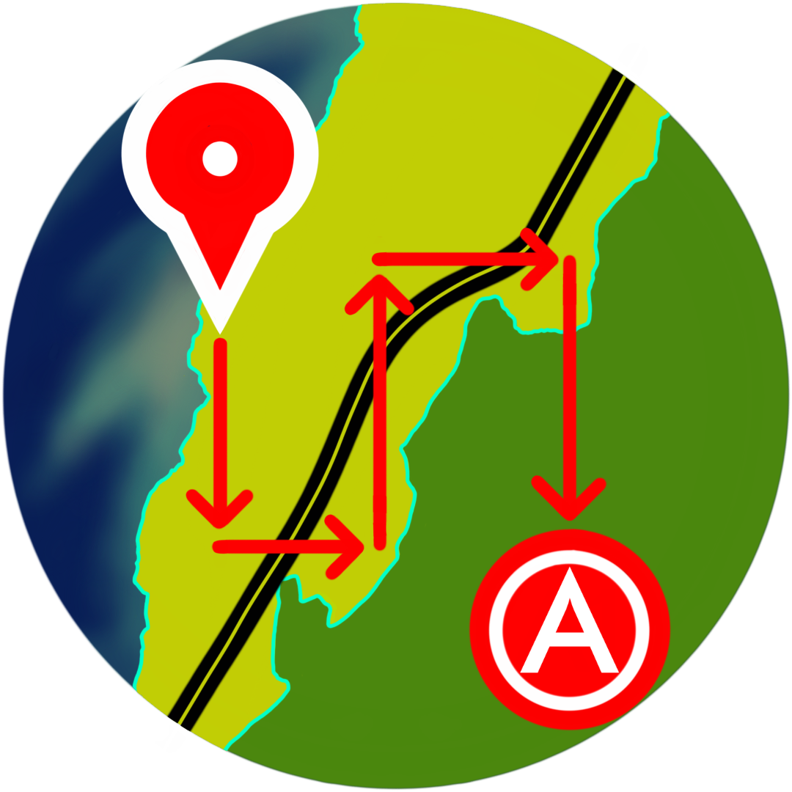
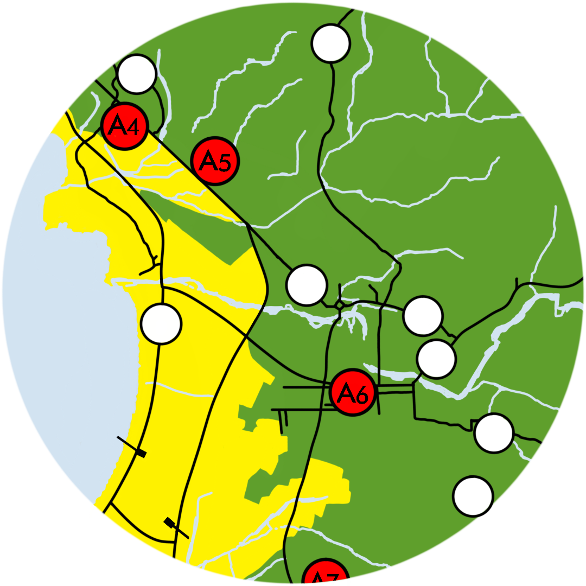
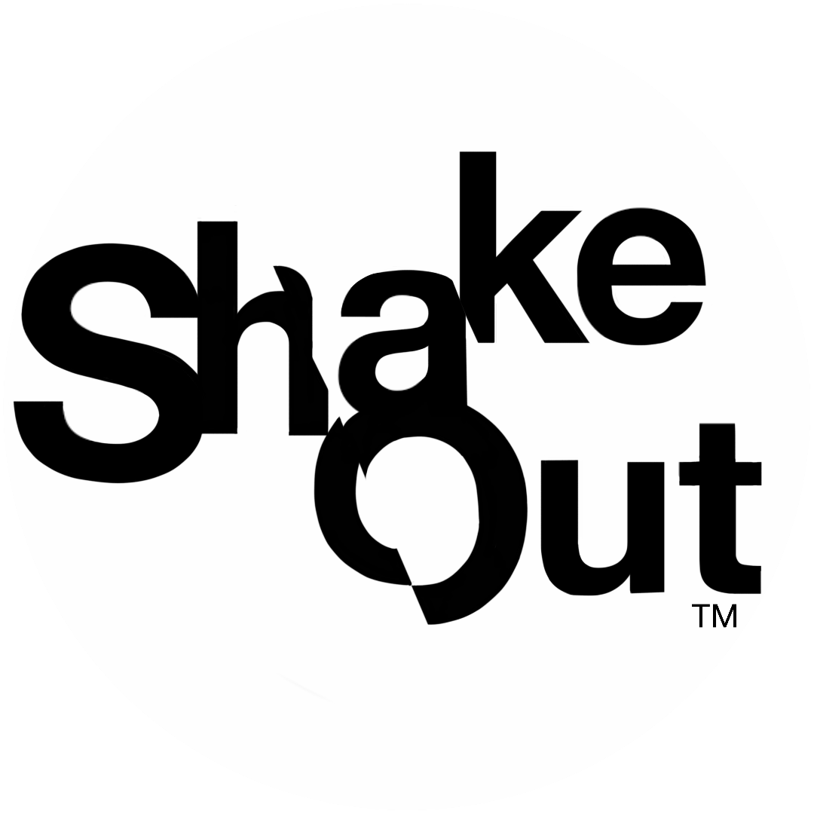
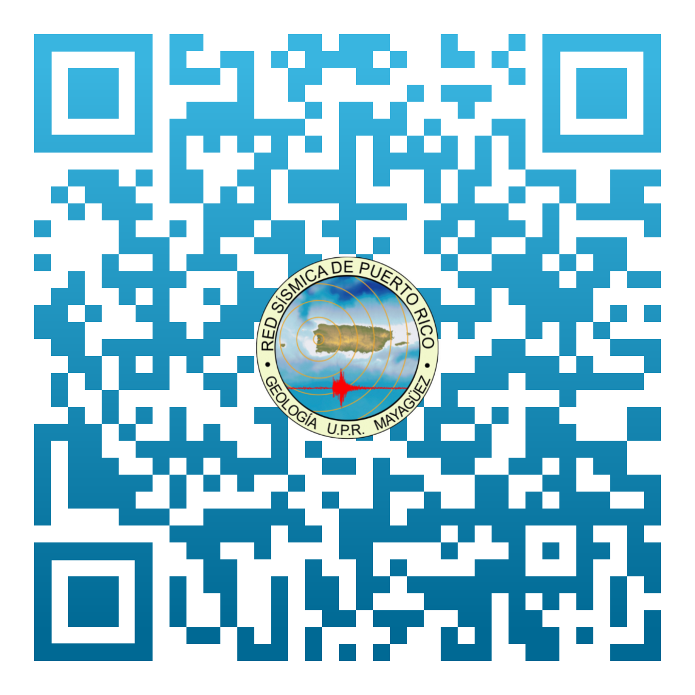

Red Sísmica de Puerto Rico
Bienvenido a la Red Sísmica de Puerto Rico. Este sitio ofrece información y recursos relacionados con la sismología en Puerto Rico.

Caribe Wave
Página principal
Solicitud de Charlas

Recursos Educativos
Portal de tsunami

Map tool

Mapas de Desalojo

Shake Out
×
Compartir esta página

Descargar
Compartir en Twitter
Compartir en Facebook
Compartir en Email
Copiar